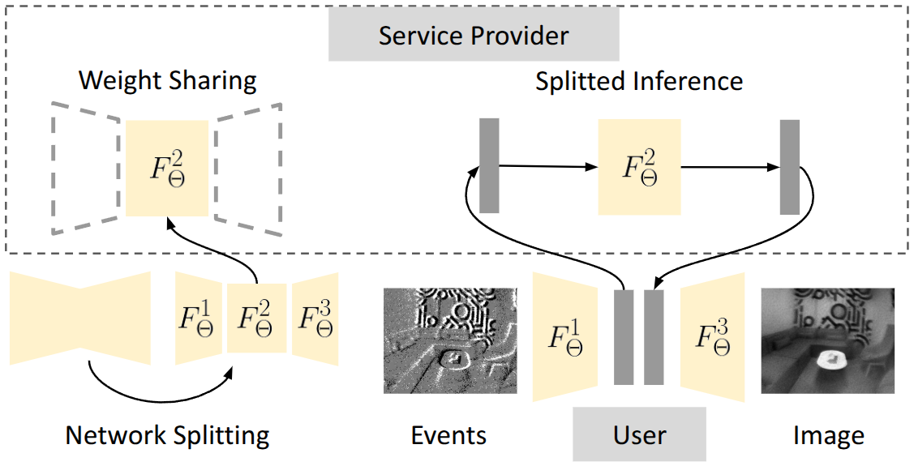

Privacy-Preserving Visual Localization with Event Cameras
IEEE Transactions on Image Processing (TIP) 2025
- Junho Kim 1,*
- Young Min Kim 1
- Ramzi Zahreddine 2
- Weston Anthony Welge 2
- Gurunandan Krishnan 2
- Sizhuo Ma 2,†
- Jian Wang 2,†
- 1Seoul National University
- 2Snap Inc.
-
*Work done during an internship at Snap Research
†Co-corresponding authors
Abstract
We consider the problem of client-server localization, where edge device users communicate visual data with the service provider for locating oneself against a pre-built 3D map. This localization paradigm is a crucial component for location-based services in AR/VR or mobile applications, as it is not trivial to store large-scale 3D maps and process fast localization on resource-limited edge devices. Nevertheless, conventional client-server localization systems possess numerous challenges in computational efficiency, robustness, and privacy-preservation during data transmission. Our work aims to jointly solve these challenges with a localization pipeline based on event cameras. By using event cameras, our system consumes low energy and maintains small memory bandwidth. Then during localization, we propose applying event-to-image conversion and leverage mature image-based localization, which achieves robustness even in low-light or fast-moving scenes. To further enhance privacy protection, we introduce privacy protection techniques at two levels. Network level protection aims to hide the entire user's view in private scenes using a novel splitted inference approach, while sensor level protection aims to hide sensitive user details such as faces with light-weight filtering. Both methods involve small client-side computation and localization performance loss, while significantly mitigating the feeling of insecurity as revealed in our user study. We thus project our method to serve as a building block for practical location-based services using event cameras.
Overview Video
Privacy Concerns in Client-Server Localization
In client-server localization, the user shares visual information with the service provider to find his or her pose in 3D space. Here, the service provider performs the costly computation during localization and returns the result to the user. During this process, privacy concerns arise for both users and observed people.
Event Cameras for Client-Server Localization

Event cameras are neuromorphic sensors that encode visual information as a sequence of events. In contrast to conventional frame-based cameras that output absolute brightness intensities, event cameras respond to brightness changes. The following figure shows a visual description of how event cameras function compared to conventional cameras. Notice how brightness changes are encoded as 'streams' in the spatio-temporal domain.
Event camera consume low power, and can capture visual information in challenging conditions such as fast camera motion or low lighting. These properties make the sensors amenable for client-server localization.
Localization Pipeline Overview
To localize event streams against conventional 3D maps built from images, our localization pipeline first converts events to images. Here events are first packaged as voxels and passed through a CNN that reconstructs images from event voxels. Then, the converted images are localized against the 3D map using off-the-shelf localization pipelines such as Hierarchical Localization.
As event-to-image conversion is costly to compute on-device, our localization pipeline splits the computation between the user and service provider. Specifically, the user computes the relatively light-weight frontal and latter layers of the conversion network, and the intermediate computation is conducted on the server. While this reduces the computation for the user, it leads to privacy breaches as the service provider could decode the intermediate activations to obtain reconstructions.
Privacy Protection Overview
We propose network-level and sensor-level privacy protection to alleviate privacy concerns. Network-level privacy protection targets localization in private scenes (e.g. apartments, corporate offices), where the user would want to completely hide what they are looking at. Sensor-level privacy protection targets a broader range of applications and focuses on hiding non-structural details such as facial regions with small additional computation.
Network-Level Privacy Protection
In network-level privacy protection, the user first re-trains a private copy of the event-to-image conversion network, and only shares the intermediate layers with the service provider. This network learns to reconstruct images from noise-infused events. As a result, the service provider cannot decode the intermediate activations.
Sensor-Level Privacy Protection
Sensor-level privacy protection consists of two light-weight filtering methods to hide regions potentially containing faces.
Median filtering preserves event voxel entries with temporally consistent intensity or motion.
Maximum-reflection filtering attenuates event voxel regions that are curvy, which often correspond to facial landmarks.
User Study (Full Version)
We conduct a user study to evaluate how the general public feels about our privacy protection algorithms. For now, we only share the questions along with a few exemplary images but during the user study we showed each user videos of multiple privacy protection results for every question.
Given the insecurity scores ranging between 1 and 5 set based on normal intensity cameras, we query on event cameras by sequentially showing raw events, event-to-image reconstructions, and privacy protection results. Both network-level and sensor-level protection lead to smaller insecurity scores.
Qualitative Results: Network-Level Privacy Protection
Qualitative Results: Sensor-Level Privacy Protection
Citation
Acknowledgements
The authors thank Dejia Xu, Fangzhou Mu, Qijia Shao, William Xie, Rui Yu, and the Spectacles team for the fruitful discussions. Also, the authors express their gratitudes toward the volunteers for the user study and human data capture. The website template was borrowed from Michaël Gharbi.